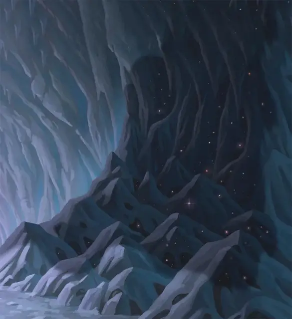

Оживлённый демиплан
Living Demiplane
Средний Конструкт, без мировоззрения

Класс Доспеха 10
Хиты 31 (7к8)
Скорость 30 футов, лазая 30 футов
| мод | спас | ||
|---|---|---|---|
| СИЛ | 1 | −5 | −5 |
| ЛОВ | 10 | +0 | +2 |
| ТЕЛ | 10 | +0 | +0 |
| мод | спас | ||
|---|---|---|---|
| ИНТ | 1 | −5 | −5 |
| МДР | 10 | +0 | +2 |
| ХАР | 1 | −5 | −5 |
Иммунитет к урону яд
Иммунитет к состояниям бессознательность, глухота, испуг, истощение, окаменение, ослепление, отравление, очарование, паралич
Чувства тёмное зрение 60 футов, пассивное Восприятие 10
Опасность 0
Бонус мастерства +2
Особенности
Сопротивление магии. Живое заклинание совершает с преимуществом спасброски от заклинаний и прочих магических эффектов.
Необычная природа. Живое заклинание не нуждается в воздухе, еде, питье и сне.
Безразмерное. Живое заклинание может входить в занимаемое другим существом пространство и наоборот, а также может перемещаться в пространстве шириной 1 дюйм без протискивания. Ожившее заклинание не может отделиться от твердой поверхности, такой как стена, потолок или пол. Если поверхности, к которой можно прикрепиться нет, живое заклинание уничтожается (см. «Планарное разрушение» ниже).
Межпространственная комната. Когда живое заклинание впервые за ход входит в занимаемое другим существом пространство (или наоборот), то это существо должно преуспеть в спасброске Ловкости Сл 10, иначе будет втянуто в межпространственную комнату живого заклинания, представляющее собой лишенную мебели каменную комнату в виде 30 футового куба. Слишком большое существо, которое не помещается в данном пространстве, автоматически преуспевает в данном спасброске. У существ в комнате никогда не заканчивается пригодный для дыхания воздух. Магия, позволяющая перемещаться между планами, например заклинание уход в иной мир [plane shift], может быть использована для выхода из комнаты, другого выхода не существует.
Существа, пойманные в межпространственную комнату, не могут видеть, выбирать целью или причинять урон живому заклинанию; однако они могут причинить урон самой комнате. Каждая 5-ти футовая секция потолка, стен и пола комнаты имеет КД 17, 50 хитов, иммунитет к урону ядом и психической энергией, а также иммунитет к немагическому колющему, рубящему и дробящему урону. Если хиты какой-либо секции уменьшаются до 0, живое заклинание и его измерение уничтожаются (см. «Планарное разрушение» ниже).
Планарное разрушение. Живое заклинание уничтожается, когда хиты одной из 5-футовых секций межпространственной комнаты уменьшаются до 0, или если живое заклинание не имеет твердой поверхности для прикрепления. Когда живое заклинание уничтожается, содержимое его межпространственной комнаты возвращается, появляясь как можно ближе к предыдущему местоположению живого заклинания. Каждое возвращенное из него существо появляется в случайном свободном пространстве вместе со всем, что оно носит или несёт.
Описание
Области дикой магии и места, разрушенные могущественными сверхъестественными силами иногда приводят к тому, что эффекты заклинаний становятся живыми сущностями. Эти так называемые «живые заклинания» населяют места, где они когда-то были созданы, подпитываясь наполняющей эти места магической энергией.
Живой демиплан — это заклинание демиплан [demiplane], которое стало смутно себя осознавать. Выглядит оно как темный прямоугольник шириной 5 футов и высотой 10 футов, ползущий по плоским твердым поверхностям и тихо гудящий при движении.
Когда оживший демиплан встречает достаточно маленькое существо, которое помещается в его дверной проем, демиплан пытается втянуть это существо в себя, а затем помещает жертву в межпространственную комнату.